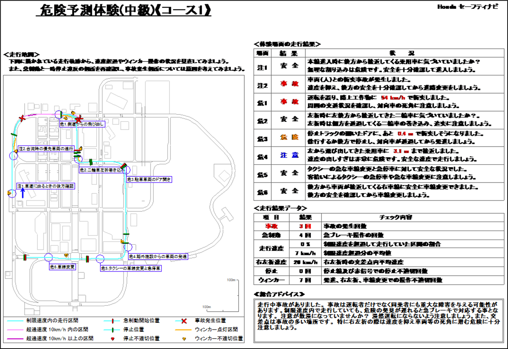
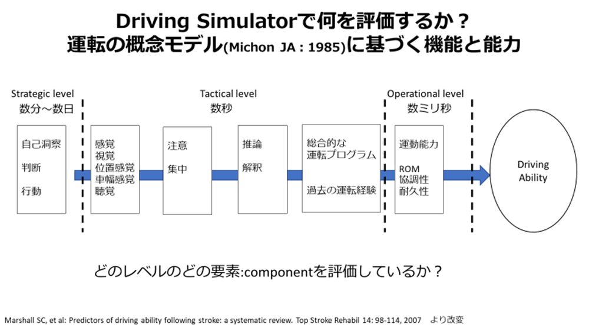

普段の臨床業務では、下記のような印刷されたデータを見ることが多いと思います。 ほとんどのセラピストは、このデータのどこに着目すべきか、判定がどのように出力されているかが 分からないことがあるのではないでしょうか。本項では、Sナビを用いた評価の判定および出力されるデータについて紹介し、 Sナビによるドライビングシミュレータ評価が階層性モデルのどの部分の評価を担っているのかを解説します。

FIG. 1 — Sナビから出力される評価データの例
運転反応検査の判定
反応検査のABCDE判定は、収集された30〜59歳、同年代健常者との比較結果をもとに判定されます （A：優秀、B：良好、C：普通、D：注意、E：不安）。単純反応・選択反応は、Honda以外のメーカーとも構成が同一です。 ハンドル操作検査、注意配分・複数作業検査はメーカーによって構成に差があります。 特にSナビのハンドル操作検査は、対象者が車幅感覚をつかみにくいことが多く、 高齢の方は順応に時間がかかったり、酔ってしまう問題があります。
反応検査の速さをもとにどう判断するかについては——著者の私見ですが——30〜59歳と同年代との比較結果で C：普通以上の判定であれば健常者と同等と考え、反応が遅れるなどのリスクは比較的抑えられていると考えます。 ただし注意していただきたいのは、絶対大丈夫というゼロリスクは不可能であり、 どこまでのリスクなら許容できるかという考え方を持つべきだという点です。
危険予測体験の判定
危険予測体験での「事故・危険・注意・安全」という判定は、対象物（車両や歩行者）との距離や走行速度など、 設定された閾値内のどのレベルにあるか（どれくらい速度を出したか、どれくらい対象物に近いか）という結果で判定されています。 したがって、対象者がどんな運転行動や判断ミスの文脈で事故に至ったかという過程までは判定していない点に注意が必要です。
このことを考えると、対象者の運転を観察した評価者の主観と、機械的に出力された判定結果に乖離が生じるのは不思議ではありません。 つまり、運転行動全体としては歩行者や他車両に注意を向けられない危険な運転をしていても、 対象物に衝突せず距離をとって停止できてしまうと、主観とは異なり「安全」と判定されます。
総合学習体験の判定
はじめに注意しておきたいのですが、総合学習体験のABCDE判定のアルゴリズムは非常に怪しいものです。 例えば「発進停止」という項目の採点は、「急発進、不停止、急停止、駐車の仕方のデータを点数化し、 その合計点から5段階評価したもの」（株式会社マネージビジネス：運転能力評価サポートソフト〜補足資料〜 Ver3.002R対応 2015/09/25更新）とされています。 しかし同補足資料には、反応検査のような判定の基準となったデータが総合学習体験には掲載されていません。
つまり総合学習体験の判定は、基準となった健常者データが存在せず、 点数化の根拠も、5段階評価の設定も不明な状態です。 以上のことから、総合学習体験のABCDE判定を用いて運転再開可否を判定するような使い方は推奨しません。
環境別走行体験・ロングドライブコースには判定がない
環境別走行体験とロングドライブコースは判定のないコースです。危険予測体験や総合学習体験のように 走行後の結果（5段階評価、走行地図）は表示されません。そのため、評価者の主観評価や、 発生したイベントに着目した評価が中心となります。特にロングドライブコースは長時間の走行となるため、 注意の持続性の側面も併せて評価できます。
コースの詳細：環境別走行体験は雨1・夜間1・雪2・高速2の計6コース。視界が悪い状態がメインとなるため、 難易度は危険予測体験上級よりも高くなります。ロングドライブコースは通常3・短縮3の計6コースで、 難易度は走行コースが長く設定された危険予測体験のイメージです。
DSはMichonモデルのどの部分を評価しているか？
自動車運転における運転行動モデルとして、Michonの階層性モデルがよく取り上げられます。 このモデルは、運転能力が3つのレベルから構成されることを示しています。 Operationalレベルは最も時間の短い下位のレベルで、ハンドル操作やブレーキ操作など、 ドライバーが無意識のうちに行っている自動的な運転行動を指すことが多いです。 次にTacticalレベルは、車線変更や追い越し、交差点進入時の判断など、状況に応じた運転操作の調整を指します。 最上位のStrategicレベルは、経路や移動手段の選択、外出計画など、運転全体に関わる意思決定を指します。
下記は、Marshallらのシステマティックレビューにおいて各レベルで求められるComponentをまとめたものです。

FIG. 2 — Michonモデル各レベルのComponent（Marshall et al.）